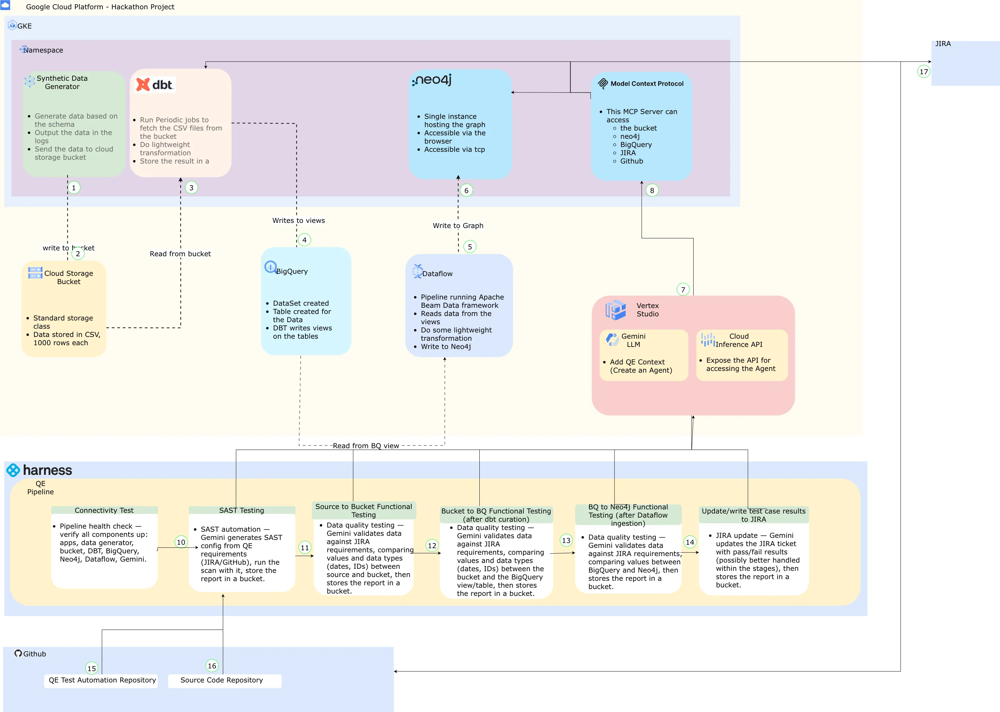

Meet Helios.
An autonomous
Quality Engineering AI Agent.
Helios — for the sun and illumination: clarity and visibility in quality automation.
From a single Jira ticket to generated test scenarios, triggered pipelines and trusted, auditable evidence written straight back to the ticket — with minimal human effort. A proof of concept built to drive the MVP inside the Economic Crime Prevention Platform.
Insight Syndicate · Soumya Samal · Astom Ahashie · Michal Jakub Kolanski
Testing can't keep pace with how fast ECP changes.
ECP products evolve rapidly across complex data flows, integrations and user journeys. Traditional testing leans heavily on manual effort, deep product knowledge and early, clear requirements — slowing feedback and increasing delivery risk.
Where teams lose time today
- ! Heavy reliance on manual test design and deep product knowledge
- ! Slow feedback on whether a change is safe to release
- ! Duplicated effort — every team builds its own approach
- ! Inconsistent quality and uneven test evidence
- ! Coverage depends on requirements being clear and early
- ! Results manually transcribed back into tickets, if at all
An intelligent assistant that tests the change for you.
Give Helios a product change — a Jira story, acceptance criteria, an API or config update — and it decides what to test and why, runs meaningful automated tests, and produces clear evidence stakeholders can trust. Built once and offered as a standard template: a single QE can adopt it in one sprint — no extra engineer needed.
Generate
Reads acceptance criteria and authors Cucumber/BDD scenarios plus Jira Test subtasks — opening a GitHub PR with the new features.
Execute
Triggers the Harness testing pipelines automatically when a ticket moves to Testing, running deterministic + BDD suites against the live pipeline.
Evidence
Writes pass/fail results back onto the ticket — updating Xray or regular subtasks — and triages failures into follow-up PRs. Fully auditable.
One agent, three connected worlds.
Helios runs as a single Deployment in the qe-hack-syndicate namespace on GKE, brokering Jira, GitHub and Harness while reading the data pipeline it tests (GCS → dbt/BigQuery → Neo4j) and reasoning with Gemini on Vertex.

One codebase: an orchestrator, six sub-agents, eight toolsets.
A quick walk through the repo — the ADK + Gemini orchestrator delegates each quality goal to a specialist sub-agent, every one backed by deterministic toolsets.
agent/ ├─ root_agent.py # ADK + Gemini orchestrator ├─ config.py # models · project · toolset wiring ├─ results.py # PASS / FAIL / ERROR contract ├─ scenarios/ # 6 deterministic QE suites │ ├─ static_analysis.py │ ├─ coding_standards.py │ ├─ integration.py │ ├─ functional.py │ ├─ non_functional.py │ └─ runner.py ├─ sub_agents/ # specialist Gemini agents ├─ tools/ # gcs·bq·neo4j·dbt·k8s·jira… └─ server/jira_webhook.py
Live walkthrough — root_agent.py, the sub_agents/ package and the tools/ MCP layer. Gemini reasons; the toolsets return a strict PASS / FAIL / ERROR.
Nothing new to buy. Everything is reused.
Every integration the agent depends on is tooling LBG already runs in production — which is exactly why this PoC is straightforward to land internally.
Jira / Xray
Source of acceptance criteria, status transitions and the home for test evidence.
GitHub
Code, generated features and agent-authored pull requests.
Harness
CI/CD pipelines that execute and gate every test suite.
BigQuery
Raw → enriched data the functional & integration suites assert against.
Cloud Storage
Raw CSV landing zone for the synthetic data pipeline.
GKE
Hosts the agent, the data pipeline cronjobs and Neo4j.
Neo4j + dbt
Graph model & transforms — validated end-to-end by the agent.
Workload Identity
Least-privilege, read-only GCP access — no JSON keys in cluster.
From acceptance criteria to evidence — hands-off.
A ticket is created
Jira emits issue_created to the agent. It verifies the token and reads the acceptance criteria.
POST /qe/jira/webhookThe agent authors the tests
The bdd_authoring_agent generates .feature files, creates linked Jira Test subtasks, and opens a GitHub PR.
The ticket moves to "Testing"
An issue_updated status transition fires the Harness bdd_tests pipeline via a custom webhook trigger.
Pipelines run the suites
Harness calls the deterministic /qe/scenario/… endpoints and the Cucumber pack — the same code path runs in CI, the agent and the CLI.
Evidence is written back
Results are synced onto the ticket's subtasks / Xray execution history. Failing runs are triaged and reconciled into follow-up PRs.
POST /qe/jira/{ticket}/sync-resultsA complete quality sweep, deterministic by design.
Static analysis
sqlfluff, ruff, bandit, yamllint — zero violations, no hardcoded secrets.
Coding standards
Model naming, documented sources, pinned images, resource limits, FK consistency.
Integration testing
GCS↔BigQuery parity, no orphan FKs, Neo4j nodes & relationships, watermark integrity.
Functional testing
Business rules — investment classification, address & phone normalisation, dbt tests.
Non-functional
SLA/performance windows, reliability & security — safe cronjobs, clean logs, bound SAs.
Generate & reconcile
Turns Jira AC into Cucumber features, creates Jira Tests, opens PRs and fixes failing runs.
Let's watch it run, end to end.
From a single Jira ticket to trusted evidence — the full loop, live against the running PoC.
Demo environment · the live PoC in the qe-hack-syndicate namespace on GKE.
A focused squad of four.
A lean, cross-functional team can take this PoC to a production-ready, end-to-end MVP in one to two quarters.
Senior DevOps Engineer
- GKE, Workload Identity, RBAC
- Harness pipelines & triggers
- Secrets, networking, observability
Backend Engineer
- ADK agent & toolsets
- Deterministic /qe API
- Jira / GitHub / Harness integration
Senior Quality Engineer
- Scenario design & coverage
- Cucumber / Xray integration
- Quality gates & evidence model
Customer Journey Manager
- Backlog & stakeholder alignment
- Adoption across teams/labs
- Value tracking & reporting
Indicative shaping. The CJM can run at ~0.5 FTE; engineering is the core of the build. Deterministic design + documented runbooks mean every member fully understands and can operate the solution.
Running the PoC is effectively pocket change.
SaaS tooling sits on free trials/tiers; the only real spend is a small GCP footprint on GKE.
| Service | Tier | ~ / month |
|---|---|---|
| GKE node pool (2× e2-standard-2) | GCP | £80 |
| Load balancers + networking (2 LBs, egress) | GCP | £35 |
| Vertex AI — Gemini 2.5 Flash (agent calls) | GCP | £20 |
| BigQuery + GCS + Artifact Registry | GCP | £10 |
| Persistent disks (Neo4j + pipeline) | GCP | £5 |
| Harness | Free trial | £0 |
| Jira / Xray | Free tier | £0 |
| GitHub | Free | £0 |
| Neo4j (community) · dbt Core | Free / OSS | £0 |
| Total PoC run cost | ≈ £150 / month |
Model choice for the PoC
The PoC runs on Gemini 2.5 Flash on Vertex AI — fast and cost-efficient, and more than capable for authoring and triage. Synthetic data is tiny, and every third-party platform runs on a free trial or open-source edition. The MVP later steps up to the latest Gemini Pro model.
Indicative GCP us-central1 list pricing, GBP at ~0.79 USD→GBP. Excludes any GCP free-trial credits, which would reduce this further.
At production scale, cost per team collapses.
In LBG the platform licences (Harness, Jira/Xray, GitHub Enterprise, GCP org) are already paid — so the marginal cost is a hardened, HA agent footprint shared across many teams. Sizing assumes ~200 pipeline runs/day across ECP (~4,400 / month).
| Component | Note | ~ / month |
|---|---|---|
| GKE (regional, HA agent + supporting) | Shared cluster, marginal | £500 |
| Vertex AI — Gemini (authoring + triage) | ~4,400 runs/mo, ~30% LLM-assisted | £200 |
| Networking, LBs & egress | HA ingress | £120 |
| Logging, monitoring & secrets | Observability | £80 |
| Harness · Jira/Xray · GitHub Enterprise | Existing LBG licences | £0* |
| Marginal platform cost | ≈ £900 / month |
Model strategy & build-once economics
The PoC runs on Gemini 2.5 Flash; for the MVP we step up to the latest Gemini Pro model for deeper reasoning at scale. Gemini is invoked only for authoring and failure triage, so each extra team adds just a little usage and compute — onboarding in one sprint.
* Licences already owned by LBG; shown as zero marginal cost. Assumes ~200 pipeline runs/day across ECP (~4,400/month). Indicative planning estimates, not a procurement quote.
From Hackathon PoC to reusable platform.
Harden the core
Productionise the agent & toolsets, secrets, RBAC, CI/CD on the LBG estate.
Prove on a real service
Wire one ECP team's Jira project end-to-end; validate evidence & gating.
Template & document
Package the reusable template, onboarding guide and Xray integration.
Roll out & measure
Onboard further teams, track value, and prepare the Group-wide case.
Faster feedback, consistent quality,
trusted evidence
— on tools we already run.
A lean squad delivers a reusable MVP in 1 quarter - allocating just 5–6 hours each per week — running for under £1.6k a month across the whole platform — roughly £40 per team. Built once, adopted in a sprint, and ready to scale Group-wide.